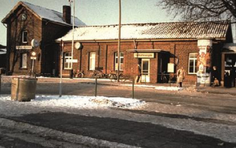
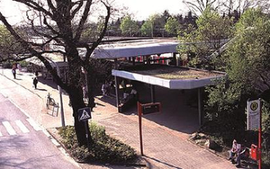
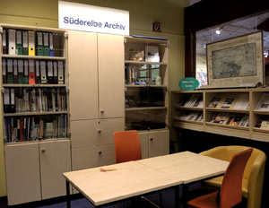

Süderelbe-Archiv
unsere Ziele
Wir sammeln und archivieren historische Fotos, Karten, Bücher, Zeitungen und Berichte von Zeitzeugen aus dem Süderelbegebiet. Das gesammelte Material gibt einen Einblick in die wechselvolle Geschichte der Süderelbe-Region und bewahrt so die Erinnerung an die Vergangenheit. Es steht historisch interessierten Bürgern und vor allem Schülern der umliegenden Schulen zur Verfügung.

Der alte und der neue Bahnhof Neugraben. 1984 wurde die S-Bahnstrecke bis Neugraben eingeweiht und der Bahnhof veränderte sein Aussehen.
unser Standort
Die Sammlung des Süderelbe-Archivs befindet sich in der Bücherhalle Neugraben, Neugrabener Markt 7, Dort in den Schränken der Archivecke sind alle Bücher, Dokumente, Karten, Fotos, Bild- und Tonträger sowie einige Gegenstände weitgehend systematisch geordnet. Zu den Öffnungszeiten der Bücherhalle können alle Materialien eingesehen werden. Eine Kopiermöglichkeit ist vorhanden.

Archiv-Ecke in der Bücherhalle
Hamburger Geschichtswerkstätten
Das Süderelbe-Archiv ist Mitglied im Verein Geschichtswerkstätten Hamburg e.V.
(s.a. unter "Links")